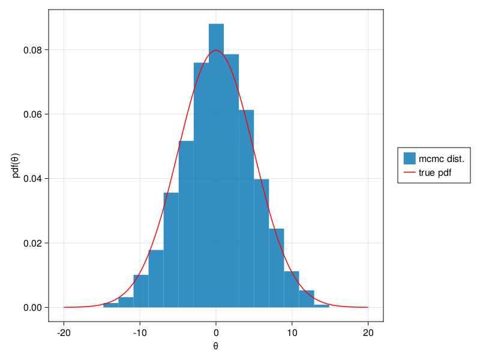

Documentation for ReversibleJumpMCMC.jl
ReversibleJumpMCMC.jl provides a lightweight framework for Reversible Jump Markov Chain Monte Carlo.
Overview
The framework is based around the following code block.
# select a jumptype
jt=rand(rjs.jumpprobability)
# propose a new state
mtest,vararg=rjs.proposalfuns[jt](mhs,rjc.states[nn])
# calculate acceptance probability
α=rjs.acceptfuns[jt](mhs,rjc.states[nn],mtest,vararg)
# accept or reject
rjc.α[nn+1]=α;
if α>rand()
rjc.accept[nn+1]=1;
rjc.states[nn+1]=mtest;
else
rjc.accept[nn+1]=0;
rjc.states[nn+1]=rjc.states[nn];
endA jumptype jt::Int64 is selected from a Categorial distribution and used to select state proposal and acceptance functions.
rjs::RJMCMCStruct holds a vector of functions for proposal generators and acceptance calculators.
States of the chain are accumlated in the vector rjc.states where rjc::RJChain is a struct holding the results of the RJMCMC run. mhs is a user defined type, typically immutable, sent to all proposal and generator functions. vararg can be customized for specific proposal/acceptance functions.
Basic Usage
1D Gaussian PDF
Explore a 1D Gaussian PDF using a basic MCMC chain
using ReversibleJumpMCMC
using Distributions
using CairoMakie
# setup a MH structure that gets passed around inside RJMMCMC
struct MHStruct
σ::Float64 # metropolis hasting jump size
end
mhs = MHStruct(1)
# setup a state type
mutable struct state1D
x::Float64
end
# setup proposal and acceptance functions
function mypropose(mhs::MHStruct, s::state1D)
teststate = state1D(s.x + mhs.σ * randn())
return teststate, 0
end
function myaccept(mhs::MHStruct, s::state1D, teststate::state1D, vararg)
σ = 5.0
d = Normal(0.0, σ)
α = pdf(d, teststate.x) / pdf(d, s.x)
return α
end
# setup the RJMCMCStruct
burnin = 100
iterations = 10000
njumptypes = 1
jumpprobability = Categorical([1.0])
proposalfuns = [mypropose]
acceptfuns = [myaccept]
rjs = ReversibleJumpMCMC.RJMCMCStruct(burnin, iterations, njumptypes, jumpprobability, proposalfuns, acceptfuns)
# initial state
state0 = state1D(0.0)
# run chain
rjc = ReversibleJumpMCMC.buildchain(rjs, mhs, state0)
# Extract parameters from states
xchain = zeros(Float32, iterations)
for ii = 1:iterations
xchain[ii] = rjc.states[ii].x
end
# Show parameter distribution
# true pdf
xvec = -20:0.1:20
σ = 5.0
d = Normal(0.0, σ)
fig = Figure()
ax = Axis(fig[1, 1], xlabel="θ", ylabel="pdf(θ)")
histplot = hist!(ax, xchain, normalization=:pdf)
pdfplot = lines!(ax, xvec, pdf.(d, xvec), color=:red)
legend = Legend(fig, [histplot, pdfplot], ["mcmc dist.", "true pdf"])
fig[1, 2] = legend
fignjumps = 100